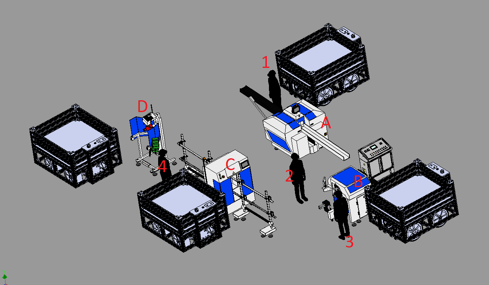
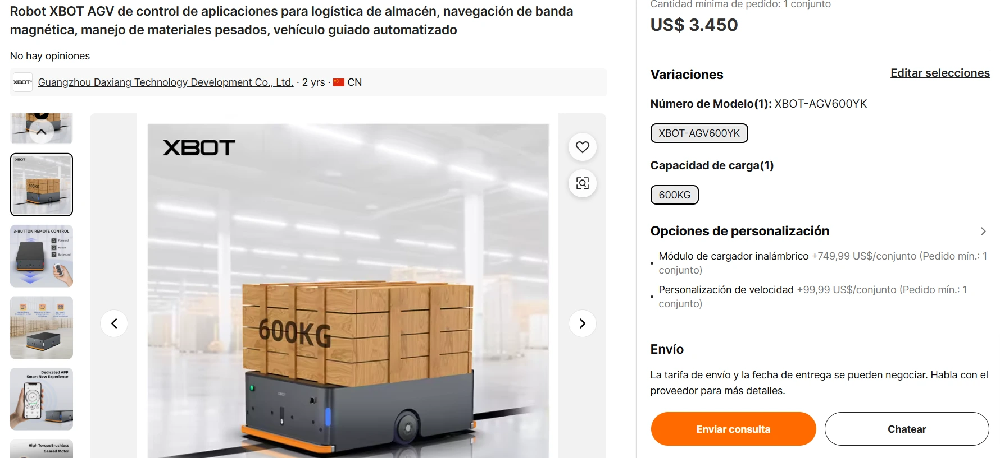

La primera etapa, realizada por Hub Filling, pone los radios en el buje o
hub. La segunda etapa, realizada por Inline Lacing, toma el buje con
radios y conecta el otro extremo de cada uno en el rin. La tercera etapa, realizada por
Robot Quattro, tiempla los radios para que queden bien tensionados. Y por
último, la quinta etapa, realizada por Tyre Mounting Console, agrega el
neumático y lo infla.
De esas cuatro máquinas, solo Hub Filling y
Robot Quattro son totalmente automáticas; mientras que
Inline Lacing y Tyre Mounting Console requieren de la
ejecución del trabajo de manera conjunta con un humano para funcionar.
La imagen a continuación ilustra lo anteriormente explicado:

Suponiendo el caso de que se fabriquen las ruedas sin intervención robótica,
se requieren cuatro obreros numerados del 1 al 4 en la figura anterior.
El obrero 1 coloca el hub o buje en la alimentación de la
máquina A (Hub Filling); el buje con los radios sale de esta
máquina para que el obrero 2 lo instale en la máquina B
(Inline Lacing). Como se mencionó anteriormente, la máquina B
requiere la acción conjunta del obrero 3 para poder realizar su
trabajo. Al finalizar la máquina B, el obrero 2 toma el producto
y lo lleva a la máquina C (Robot Quattro), la cual dispone de un
sistema de alimentación por rieles. Finalmente, el obrero 4 toma el
producto obtenido de la salida de la máquina C (Robot Quattro),
instala el neumático y lo infla con ayuda de la máquina 4.
Todas las cuatro máquinas están comunicadas y configuradas de tal forma que
no liberen el producto en su salida mientras la siguiente aún no lo
haya procesado. De esa manera, no existen acumulaciones y no se requieren contenedores
para almacenar productos intermedios entre estaciones.
A partir de videos de
Youtube,
se ha determinado que una persona demora aproximadamente
8 segundos en insertar y asegurar el hub y el rin en la
máquina B. Si a ello se suman los
≈6 metros que debe caminar para ir y volver de una máquina a otra,
a una velocidad razonable de 1 m/s, entonces la máquina B tendrá que esperar aproximadamente 14
segundos desde que termina un trabajo hasta que comienza el siguiente, representando esto un cuello de botella.
M5.2. Justificación de la implementación de la celda robótica mediante la obtención del ROI
Las tareas realizadas por los obreros 1 y 2 son altamente repetitivas y predecibles, lo cual es perfecto para
programar en un robot. Además, los robots son mucho más adecuados en este tipo de tareas ya que suelen llevarlas
a cabo de manera más eficiente, sin cansancio y sin distracciones, eliminando errores humanos y reduciendo el
nivel de riesgo laboral. Es por esto que, en la industria, el tending es una de las aplicaciones más comunes de
celdas robóticas. Por estos motivos, se ha propuesto que, de toda la línea de producción, la fabricación de las
ruedas es la etapa más adecuada para implementar una celda robótica.
Gracias a la velocidad de los robots, precisión y coordinación con las otras máquinas, el tiempo de 14 segundos
realizado por el obrero 2 para tomar la pieza de la salida de la máquina A y alimentar la entrada de la máquina
B, puede ser reducido bastante. Teniendo en cuenta que, de acuerdo al fabricante, el tiempo de ciclo mínimo de
las máquinas A, B, C y D es de 30 segundos, entonces mediante una regla de 3 se puede demostrar que en 1 hora la
línea con humanos producirá 81 unidades (3600/(30+14)), pero con un robot del doble de velocidad, se alcanzarían
a fabricar 97 unidades (3600/(30+7)). Esto representa una ganancia de productividad del 19.75%.
Como se explicó anteriormente, dos de las máquinas son totalmente automáticas, por lo que solo necesitan ser
alimentadas con materia prima. En la celda de manufactura sin robots explicada en el apartado anterior, dos
obreros son los encargados de alimentarlas: el obrero 1 alimenta a la máquina A, mientras el obrero 2 alimenta a
la máquina B (y también la C). Si se implementa la celda robótica para realizar estas tareas, el personal
necesario para el proceso pasaría de 4 obreros a solo 2, una reducción del 50%.
Por otro lado, supongamos como primera iteración una inversión inicial aproximada de 70000 dólares para la
implementación de la celda. Adicionalmente recordemos que la fábrica trabaja a doble jornada de lunes a sábado,
y que cada obrero de la celda le cuesta a la empresa 1000 dólares mensuales incluyendo prestaciones, lo cual
representa 13000 dólares anuales incluyendo prima.
Con estos datos podemos hacer uso de la siguiente herramienta web (ver aqui calculadora) la cual nos permite obtener
un estimativo del retorno de la inversión. A continuación, mostramos una captura de pantalla de sus parámetros
de entrada:
Y a continuación se muestran los resultados arrojados por la herramienta web:
Esto significa que después de 2 años y 7 meses, la empresa va a recuperar el dinero invertido (ROI), un
resultado considerado casi siempre como suficiente para la mayoría de las empresas. Adicionalmente, la página
nos arroja información de las ganancias obtenidas después de 15 años gracias a la celda robótica respecto a la
celda sin robot: casi 450000 dólares por ahorro en gastos de personal y 90000 dólares por aumento de la
productividad.
También se comparte información más detallada de cada año como se muestra en la siguiente captura de pantalla:
Vale la pena aclarar que la aplicación web asume una inflación del 2% efectivo anual.
Estos resultados parciales los consideramos argumentos suficientes por lo menos para hacer el diseño de la celda
robotizada. Más adelante, cuando el diseño haya finalizado, tendremos valores más realistas que nos permitirán
darnos una idea de manera más confiable si realmente vale la pena o no la inversión.
3. Diseño de la celda robotizada
Como se mencionó en el anterior apartado, la idea es que el robot realice las tareas de los obreros 1 y 2. Por
lo tanto, con el fin de que el robot pueda interactuar con la máquina A, B y C de la manera más práctica y
óptima, se decide implementar un layout en U. Entonces se ubican las 4 máquinas siguiendo este patrón como se
muestra a continuación:
El robot tendrá que interactuar con las máquinas A, B y C; y también con un inventario de hubs y bujes para
alimentar a la máquina A. Con base en esta información, dibujamos el área de acción aproximada que deberá tener
el robot, como se muestra en la imagen a continuación:
Por lo tanto, el espacio de trabajo del robot debe cubrir un área de 10m x 3.4m. La propuesta para lograr esto
es usar un riel de 10m a lo largo del cual un robot con alcance horizontal mayor a 1.7m se pueda mover
linealmente. Con esta información, y sabiendo que el peso máximo de una rueda de bicicleta es de 2.5kg y el del
hub es de 2.3kg, entonces pasamos a seleccionar un robot adecuado que satisfaga nuestras necesidades teniendo en
cuenta esas características.
Se decide seleccionar el Robot KUKA KR 8 R2010-2. En la captura de pantalla de su Datasheet se muestran sus
especificaciones de espacio de trabajo:
Como se puede observar tiene un alcance de 2.01 m, por lo que cumple con las exigencias de la aplicación. Así
mismo, a continuación se muestra sus especificaciones de carga:
La curva de carga en función de su alejamiento al TCP, muestra que puede cargar más de los 4.8kg que pesa la
rueda con Hub, incluso cuando el peso está concentrado hasta 20cm alejado del plano perpendicular del eje de
aproximación del efector. Esto significa que también cumple con el requerimiento de la aplicación.
Mencionar que en Alibaba el robot cuesta 26.000 dolares puesto en el puerto de Schenzen China, como se observa a
continuación.
El siguiente paso consiste en seleccionar el controlador para el robot, el cual según manual debe ser el Kuka
KRC4 que en Ebay cuesta 19700 dólares puesto también en el puerto de Shenzen China.

Ahora se selecciona un riel de 10 metros, encontrándose el modelo ABB IRBT 6004 el cual se muestra a continuación
y cuesta 6240 dólares.
Para alimentar a la celda robótica, se usan vehículos AGV de dos tipos. El primer tipo, sirve para el transporte
de los neumáticos, los hub o bujes, el rin y como inventario de salida. Se seleccionó modelo XBOT-AGV600YK con
capacidad de 600kg, cuyo precio es de 3450 dolares en Alibaba China, como se observa en la siguiente captura:
Por otro lado, también se seleccionó un vehículo AGV para transportar los bujes, modelo Zhejuang Caroon 5T. A este
vehículo se le adecuo una especie de estantería, específicamente para que el robot pudiera agarrar los bujes
fácilmente. Cesta 7420 dólares en Alibaba como se muestra a continuación.
Finalmente, a continuación se muestra la celda robótica diseñada, con cada una de sus partes y una breve
explicación de su función:
Zhejiang Caroon 5T con estantería:
Vehículo AGV que se encarga de transportar los bujes desde el área de recepción
de materiales hasta la celda robótica; una vez allí, sirve como inventario para
que el robot pueda tomarlos fácilmente.
Holland Hub Filling:
Máquina automática que introduce los radios al buje.
KUKA KRC4:
Controlador del robot KUKA KR 8 R2010-2.
Tablero eléctrico de la celda robótica:
Contiene el PLC, elementos de protección, fuente y todo lo necesario para que la
celda funcione.
XBOT-AGV600YK:
Vehículo AGV que sirve para transportar y funciona como inventario de rines.
Holland Inline Lacing:
Máquina que ayuda al operario 1 a poner los radios en el rin.
Operario 1:
Persona que usa la Holland Inline Lacing para poner los radios en el rin.
Robot KUKA KR 8 R2010-2:
Robot que hace tending alimentando a la Holland Hub Filling, a la
Holland Inline Lacing y a la Robot Quattro. También retira el producto de la
Holland Hub Filling.
XBOT-AGV600YK:
Vehículo AGV que sirve para transportar y funciona como inventario de neumáticos.
Operario 2:
Persona que usa la máquina Holland Tyre Mounting Console para colocar el
neumático en el rin e inflarlo.
Holland Tyre Mounting Console:
Máquina que ayuda al operario 2 a poner el neumático en el rin.
ABB IRBT 6004:
Riel de 10 metros que da movimiento lineal al robot KUKA KR 8 R2010-2,
aumentando su espacio de trabajo.
XBOT-AGV600YK:
Vehículo AGV que sirve como inventario de salida de la celda y transporta las
llantas finalizadas a la línea de producción principal.
Robot Quattro:
Máquina automática que tiempla los radios en el rin, dejándolos bien tensos y
firmes.
M5.4. Diseño de la herramienta efector final
El objeto que siempre va a agarrar el robot es el hub o buje. Por lo tanto, para poder diseñar el efector final,
el primer paso consiste en analizar la geometría y las características del hub y decidir de donde lo va a agarrar.
A continuación, se muestra el hub usado en nuestra planta.
Como se puede observar, posee una rosca 3/8 a ambos lados. Consideramos que la manera más conveniente para que el
robot lo agarre, es a través de esta rosca. Entonces diseñamos un efector final especialmente adaptado a estas
dimensiones, para que cuando cierre, lo agarre de esa parte. Una imagen del CAD realizado se muestra a
continuación:
Es importante mencionar, que para evitar dañar la rosca del hub o buje, la parte interna de la pinza está
cubierta con una delgada espuma. En el cuerpo del efector se encuentra un motor eléctrico para abrir y cerrar la
pinza. Su base encaja perfectamente con el flanche del robot, y requiere de 8 tuercas métricas M5 para su ajuste.
Debido a su geometría, el uso de tornillos no es posible. A continuación se muestra este efector final instalado
en el CAD del robot.
M5.5.5. Análisis y gestión de riesgos
Para el análisis y gestión de riesgos, nos basamos en el siguiente flujo sacado de las diapositivas de clase:
Determinación de los límites de la máquina
Para determinar los límites de la máquina, se realizó un análisis de la zona de trabajo, como se muestra a
continuación:
Gracias a esta figura, se pudieron identificar 3 zonas de precaución:
Zona 1:
Corresponde a la intersección o zona compartida entre el área de trabajo del
obrero 2 y el área de trabajo del robot.
Zona 2:
Es la zona más crítica, ya que no solo comprende la intersección entre el área
de trabajo del obrero 1 y la del robot, sino que además tanto el robot como
el obrero 1 colocan y recogen piezas en el mismo lugar.
Zona 3:
Corresponde a las inmediaciones alrededor del riel. Aunque en esta zona no haya
obreros trabajando de forma continua, es un área a la que periódicamente accede
el personal de mantenimiento de las máquinas. Asimismo, para hacer
setup a las máquinas, es necesario ingresar a esta zona.
Identificacion de peligros
Basados en la anterior imagen, se identificaron los siguientes peligros:
Golpe del robot a las personas:
Hay dos trabajadores dentro del área de alcance del robot y del riel,
correspondiente a la zona de precaución 1 y 2. El robot podría
golpearlas.
Atropellamiento del riel a las personas:
Aunque la mayor parte del tiempo no hay personas en las inmediaciones
directas del riel, sí puede haber durante procesos de mantenimiento o
setup de las máquinas Holland. Una persona podría ser
atropellada.
Atrapamiento en el riel:
Entre el chasis del riel y la estructura, las guías del riel pueden generar
puntos de atrapamiento para los obreros. Asimismo, las poleas, engranajes y
demás mecanismos del riel también podrían representar puntos de atrapamiento.
Atropellamiento del AGVs a las personas:
Los obreros y los vehículos AGV comparten espacios de trabajo. Por lo
tanto, podría haber un atropellamiento cuando uno de estos esté entrando o
saliendo.
Evaluación de riesgos
Para realizar la evaluación de riesgos existen varios métodos. Por su claridad y facilidad de usos nosotros hemos
seleccionado el “Hazard rating number”. Este método multiplica cuatro índices los cuales hemos mostrado en la
siguiente figura:
Al resultado de esa multiplicación se le ha llamado índice HRC y se lo evalúa usando la tabla mostrada a
continuación:
Por lo tanto vamos a realizar este proceso para cada uno de los peligros, como se observa en la siguiente tabla.
Peligro
Frecuencia de exposición (F)
Severidad de lesión (S)
Probabilidad de ocurrencia (O)
Número de personas (P)
HRN Total
Valoración
Valor
Valoración
Valor
Valoración
Valor
Valoración
Valor
Golpe del robot a las personas
Constante
5
Fatalidad
15
No sería sorprendente
8
1 o 2
1
600
Atropellamiento del riel a las personas
Diario
2.5
Fractura de hueso mayor
4
Podría pasar
5
1 o 2
1
50
Atrapamiento en el riel
Diario
2.5
Pérdida de una extremidad
6
Podría pasar
5
1 o 2
1
75
Atropellamiento del AGVs a las personas
Constante
5
Fractura hueso menor
2
Improbable
1.5
1 o 2
1
15
Por lo tanto riesgo de “Golpe del robot a las personas” es muy alto, el riesgo de “Atropellamiento del riel a las
personas” está entre medio y alto, el riesgo de “Atrapamiento en el riel” es alto y el riesgo de “Atropellamiento
del AGVs a las personas” es bajo.
Medidas de prevención
Se tomaron las siguientes medidas con el fin de reducir los riesgos:
Golpe del robot a las personas
Cambiar el robot por un robot colaborativo.
Capacitar al personal sobre zonas de riesgo y operación segura del robot.
Atropellamiento del riel a las personas
Cercar las inmediaciones directas del riel para evitar acceso a menos
que haya mantenimiento.
Instalar sensores de presencia que detengan el movimiento del riel si
detectan personas en su trayectoria.
Establecer una lógica de enclavamiento que impida el movimiento del
riel si el robot no está en posición segura.
Capacitar al personal sobre los riesgos asociados al movimiento del riel.
Atrapamiento en el riel
Cercar las inmediaciones directas del riel para evitar acceso a menos
que haya mantenimiento.
Cubrir los puntos de atrapamiento entre el riel y otras estructuras
con resguardos físicos.
Instalar una varilla de emergencia accesible con el pie a lo largo del
recorrido del riel.
Realizar inspecciones periódicas para garantizar el correcto
funcionamiento de los resguardos.
Capacitar al personal sobre la identificación de zonas de atrapamiento
y cómo evitarlas.
Atropellamiento de los AGVs a las personas
Configurar velocidades de operación seguras para las zonas compartidas
con personas.
Implementar señalización visual y auditiva (luces, alarmas) en los AGVs
para advertir su presencia.
o Capacitar a los trabajadores sobre las rutas y comportamientos seguros al interactuar con AGVs.
Segunda evaluación de riesgos
Después de realizar las medidas de mitigación, se recalcula la evaluación de riesgos como se observa a
continuación:
Peligro
Frecuencia de exposición (F)
Severidad de lesión (S)
Probabilidad de ocurrencia (O)
Número de personas (P)
HRN Total
Valoración
Valor
Valoración
Valor
Valoración
Valor
Valoración
Valor
Golpe del robot a las personas
Constante
5
Herida superficial
0.1
Improbable
1.5
1 o 2
1
0.75
Atropellamiento del riel a las personas
Anual
0.5
Fractura de hueso mayor
4
Improbable
1.5
1 o 2
1
3
Atrapamiento en el riel
Anual
0.5
Pérdida de una extremidad
6
Improbable
1.5
1 o 2
1
4.5
Atropellamiento del AGVs a las personas
Constante
5
Moretón
0.1
Muy Improbable
1
1 o 2
1
0.5
Como se puede observar, todos los HRN totales son inferiores a 5 y por lo tanto no hay que implementar más
medidas.
Reselección del robot
Debido a que una de las medidas de mitigación fue remplazar el robot previamente seleccionado por uno
colaborativo, aquí se mostrará el nuevo motor seleccionado. Se trata del Fanuc CRX-25iA, el cual como se observa
a continuación su capacidad de carga es hasta de 30kg y tiene un alcance de 1.89 m. En otras palabras, también
cumple con los requerimientos. Cuesta 50.000 dolares.
Diseño de celda robótica terminada
Después de tomar, las medidas de mitigación correspondientes, a continuación, se muestra el diseño de la celda
robotizada completamente finalizada.
Aquí ya se puede observar la cerca instalada y el nuevo robot.
BOM y reevaluación del retorno de la inversión
Como ya se conocen todas las partes, se hace una investigación de sus precios y se muestra la lista de partes
BOM a continuación:
Pieza
Cantidad
Precio por unidad (COP)
Total (COP)
Robot CRX-25iA
1
200,000,000
200,000,000
R30iB mini controller
1
58,000,000
58,000,000
Cerca de 10 × 2 metros
1
800,000
800,000
Vehículo AGV XBOT-AGV600YK
6
14,000,000
84,000,000
Vehículo AGV Zhejiang Caroon 5T
2
30,000,000
60,000,000
Robot Track ABB IRBT 6004
1
25,000,000
25,000,000
Holland Hub Filling
1
240,000,000
240,000,000
Holland Inline Lacing
1
200,000,000
280,000,000
Holland Robot Quattro
1
280,000,000
280,000,000
Holland Tyre Mounting Console
1
16,000,000
16,000,000
Tablero eléctrico celda
1
12,000,000
12,000,000
Riel de alimentación Robot Quattro
2
800,000
800,000
Herramienta efector final
1
4,500,000
4,500,000
Flete
1
40,000,000
40,000,000
Impuestos de nacionalización
1
239,000,000
239,000,000
Adecuaciones e instalación
1
40,000,000
40,000,000
Total
1,580,100,000
Y ese sería el BOM de toda la Celda.
Con el objetivo de recalcular el retorno de inversión ROI, se eliminan las cosas que ya estaban, como se
observa:
Pieza
Cantidad
Precio por unidad (COP)
Total (COP)
Robot CRX-25iA
1
200,000,000
200,000,000
R30iB mini controller
1
58,000,000
58,000,000
Cerca de 10 × 2 metros
1
800,000
800,000
Vehículo AGV XBOT-AGV600YK
Vehículo AGV Zhejiang Caroon 5T
2
30,000,000
60,000,000
Robot Track ABB IRBT 6004
1
25,000,000
25,000,000
Holland Hub Filling
Holland Inline Lacing
Holland Robot Quattro
Holland Tyre Mounting Console
Tablero eléctrico celda
Riel de alimentación Robot Quattro
2
Herramienta efector final
1
4,500,000
4,500,000
Flete
40,000,000
40,000,000
Impuestos de nacionalización
1
81,377,000
81,377,000
Adecuaciones e instalación
1
40,000,000
40,000,000
Total
509,677,000
Y se calcula el ROI usando la herramienta web, con este nuevo valor total convertido en dólares, es decir
127.419 dolares, obteniendo el siguiente resultado:
Entonces el retorno de la inversión ROI es de 4 años y 8 meses, y ya depende de la junta directiva determinar si
vale la pena o no. En nuestra opinión, consideramos que casi 5 años es demasiado largo, y por lo tanto pensamos
que no vale la pena.